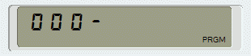
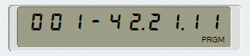
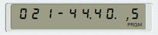
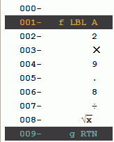
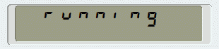

Programs
PRGM mode
Writing Programs
To write a program on the HP-15C, you must switch to PRGM mode by pressing g P/R. In the Simulator you can also press F9 on the keyboard or click on P/R. The display format will change and the word "PRGM" will appear in the lower right corner of the display:

You can now start typing commands, just as you would do in Run mode. The HP-15C will record the keys as you type, but will not execute any commands. HP-15C programs are more like macros than like true programs.
All programs in this documentation use the decimal comma style, where the comma acts as the decimal separator and the period as the thousands separator.
Each program begins with a label. Valid labels are the letters "A" to "E", the numbers "0"
to "9" and ".0" to ".9". As an example, we will write a program that starts with label
"A". Click f LBL A or
key in F8 Q.
This is the first program step and it is displayed like this:

Each key on the HP-15C is identified by a two-digit code that corresponds to its position on the keypad.
The first digit indicates the row (starting from one) and the second digit indicates the column (where 0 means 10). For
example, LBL is on the first key in the second row and has the key code "21".
Digit keys, however, differ from that rule; the digit itself identifies them.
The key codes for a three-key sequence are separated by a thousands separator. The codes in a two-key sequence are separated by blanks. There are also four-key sequences, like STO + . 5 which adds the contents of the X-register to register 15. Those sequences are displayed like this

To complete the program, enter the following key sequence:
This little program computes the time it takes for an object to fall from a given height to the ground in
the earth's gravity field. The gravitational acceleration is approximately 9.8 m/s2.
In PRGM mode, you can display the program popup menu by right-clicking the display. You can find a complete description of this popup menu in the Pop-up Menu section.

To run a program you must switch to Run mode. Click g P/R, or press F9, again.
In PRGM mode, you can paste text from the system clipboard into the simulator by using
Ctrl–V or B2 when it is in
Program File Format.
The Mnemonic Converter generates that format.
Running a Program
To run a program click the GSB key followed by the program label. So GSB A will run the program that begins with LBL A. While a program is running, the display flashes "running":

On the Simulator, programs with an alpha label can also be run by clicking on the gold labels A through E, if the 'Access "f" and "g" functions directly' option is enabled in the preferences. Programs with numeric labels can only be run using the GSB key. In addition, the Simulator provides several shortcuts for running programs. A complete list can be found in the Program (Run mode) section of the "Keyboard" chapter.
Any keystroke or any mouse click on a simulator key interrupts a running program. Mouse clicks outside of the keyboard area do not interrupt a program. For example, you can move the simulator window around the screen while a program is running without interrupting it.
The GTO key cannot be used to run a program. If the simualator is in Run mode,
GTO A will only position the program pointer on the
step with label "A", but will not run the program. To run the program now, click R/S
or press F5.
Program Documentation
With the Simulator, you can add documentation to your programs, a feature not available on the real HP-15C. The documentation has no effect on the program itself. Documented programs are fully compatible with the real HP-15C.
The Description Dialogue
To document a program, press F12 or select "Program description…" from the ON popup menu to open the Program Description dialogue box. The dialogue has the following elements:- Program Title
A one-line description of the purpose of the program.
- Usage
A multiline text field to describe the purpose of a program and how to use it.
Preview mode
Preview mode renders the description to give you an idea, of what the HTML export will look like. You cannot change the description in Preview mode.When you open the documentation dialogue, Preview mode is automatically switched on if the option Automatic preview is enabled in the preferences and the "Usage" field contains HTML tags.
Edit mode
The mode for adding or changing the program description. Standard editor shortcuts, such as Ctrl–X, C, V, Z (undo) and Y (redo) are supported.There are several ways to enrich the documentation with HTML tags or HP-15C specific CSS classes:
- The toolbar below the text field
- A right-click pop-up menu
- Using keyboard shortcuts (see table below)
- and finally, manually typing in tags
If the whole area of a tag is highlighted, e.g. "<bold>some text</bold>", applying the same tag again will remove the tag (undo).
When applying a list item tag, there are two ways to treat the selected text:
- As a single list item: The button li / or the menu item "List item"
- Multiple list items separated by a new lines or hard breaks: The button li…li /
 or the menu item "Multiple list items":
or the menu item "Multiple list items":
Hard line breaks should only be used to structure the text, i.e. to insert a blank line. The layout of the final text should be checked by resizing the Documentation dialogue box in Preview mode. Blank lines at the end of the text are deleted when the documentation is saved.
The following table lists the HTML tags and HP-15C specific classes supported in Preview mode and the corresponding keyboard shortcuts in Edit mode. Where more than one tag is listed, the keyboard shortcut will insert the first one in the list.
Additional keyboard shortcuts in Edit mode:HTML tag Shortcut Description Windows, Linux macOS <strong>, <b> Ctrl–Shift–B shift–command–B Text conventionally styled in bold <em>, <i> Ctrl–Shift–I shift–command–I Text conventionally styled in italic <pre> Ctrl–Shift–P shift–command–P A block of preformatted text <sup> Ctrl–Shift–S shift–command–S Superscript text <sub> Ctrl–Shift–T shift–command–T Subscript text <ul> Ctrl–Shift–U shift–command–U Unordered list of items <ol> Ctrl–Shift–O shift–command–O Ordered list of items <li> Ctrl–Shift–L option–command–L Represents a list item. <code> Ctrl–Shift–C shift–command–C Code fragment, conventionally using a monospace font <h1>…<h6> - - Headings 1 through 6 for the sections <a> Ctrl–Shift–A option–command–A Represents a hyperlink.
When the selected text is a valid URL, it is set as value of the "href" attribute.HP-15C CSS class HP15CRegister Ctrl–Shift–R shift–command–R Registers, e.g. X HP15CKey Ctrl–Shift–K shift–command–K Primary HP-15C key functions,e.g. SST HP15CfKeyLabel Ctrl–Shift–F shift–command–F Gold alternate HP-15C key functions,e.g. LBL HP15CgKeyLabel Ctrl–Shift–G shift–command–G Blue alternate HP-15C key functions, e.g. BST HP15CfKey Ctrl–Alt–F options–command–F Gold prefix f-key f HP15CgKey Ctrl–Alt–G options–command–G Blue prefix g-key g Shortcut Description Windows, Linux macOS F3 F3 Find next occurrence of search string F5 F5 Refresh the HTML-tag highlighting F6 F6 Toggle between Preview and Edit mode Ctrl–F option–F Toggles the search and replace window. Ctrl–_ option–- Inserts Unicode character "—" (Em Dash). Useful to type fraction lines in pre-formatted code Ctrl–> n/a Inserts Unicode character "→" (right arrow) Ctrl–< n/a Inserts Unicode character "←" (left arrow) Ctrl–× command–× Inserts Unicode character "·" (middot). Multiplication sign or dot operator Ctrl–B3 command–B3 Opens the symbols menu at the cursor position - Labels
One field for each label in a program step starting with f LBL, GTO or GSB.
It is possible to use a label more than once in a program, but you can only have one description for all occurrences.
If a label description starts with a "#", it will not appear in the GSB menu. This allows it to hide subprograms that should only be called from within the programy.
- Data Storage Registers
A one-line field for each data storage register in a program step starting with STO or RCL.
- Flags
A one-line field for each Flag in a program step starting with SF, CF or F?.
- Reload
When this button is pressed, the current program is analysed and the dialogue box is redrawn with the current set of labels, data storage registers and flags. See the next section for more details.
- OK
Stores the documentation in the Simulator memory. The documentation is NOT written to the program file at this time.
- Cancel
The documentation in the Simulator memory remains unchanged.
Changes to the documentation are indicated by a * in the title bar of the window.
The elements in the dialogue box, i.e. labels, data storage registers and flags, are displayed in
- 1 column, if no more than 1 element of a type is used
- 2 columns, if no more than 30 elements are used in total
- 3 columns, when more than 30 elements are used in total or more than 10 elements of the same type are used, or the vertical screen size is 800 pixels or less.
Documentation Life Cycle
When you start documenting a program, the documentation is only in the simulator memory. To include it in the program, you must save the program file. This also applies to changes to the documentation: You must always save the program manually. When you open a documented program file, the documentation is copied into the simulator memory. Any existing documentation will be overwritten.
If you delete a label or flag or if you no longer use a data storage register, its description will not be deleted until you close the Simulator or save the program file. In these cases, the documentation is purged, i.e. descriptions that are no longer used are deleted and not saved.
If you reuse a previously deleted element before closing the Simulator or saving the program, the previous description of that element will be re-used in the program description.
Program Files
Saving and Opening Programs
The current program is always part of the memory file and is therefore automatically saved each time the memory is saved.
In addition, programs can also be saved separately: Pressing Ctrl–S
opens the operating system's Save File dialogue box. The default file name for new programs is "New.15c" or the first
40 characters of the "Program title", if available. The Simulator supports the file extensions ".15c" and
".txt"; the default is ".15c".
To open a program file press Ctrl–O. The standard operating system dialogue box for opening files opens. When a program is loaded, all currently loaded programs are deleted. If the new program is larger than the available memory, the display will show ERROR 4 and the program will not be loaded. It is not possible to merge programs during loading. For information on how to do this manually, see the next section on file format.
The Simulator remembers the last directory used to read or write a program file. This directory is used as the start directory the next time a dialogue box is opened.
Program File Format
Simulator program files are simple text files. The following figure shows the program file for the small program used in the previous sections:
| HP-15C Simulator program |
|---|
|
As on the real HP-15C, step "000" is always empty.
Each line in a program file must be of one of the following types:
- Documentation
Documentation lines begin with "
#<type>:" where <type> can be one of the following:T Program title. D Program Description, i.e. the contents of the "Usage" field. Ln Label description. n is a number between -1 and -5 for the labels A through E or a number between 0 and 19 for the labels 0 to .9. Rn Data storage register description. n is a number between 0 and 19 for the registers 0 to .9 or " I" for the index register.Fn Flag description. n is the flag number from 0 to 9. Manual editing of the documentation is not recommended; use the Program Description dialogue box instead.
- Comment
Comment lines begin with a "
#" not followed by one of the documentation letters. They are for internal use only. - Blank line
A blank line is a line that contains only white spaces or has a length of zero. Blank lines are skipped.
- Program step
Any line that is not recognised as a comment or a blank line is expected to contain a program step. The line must then have the form:
[line_number] "{" key_sequence "}" [mnemonic]The "
key_sequence" must be a valid HP-15C key sequence enclosed in curly braces; "line_number" and "mnemonic" are optional, and whitespace is ignored.
Program files are encoded in UTF-16 (LE) by default to preserve all special characters used in mnemonics. You can change the encoding to the system default encoding (see Files), but then mnemonics with special characters may not be stored correctly. Key sequences are not affected as key codes contain only digits.
When reading a file, only the key sequences are used. Line numbers and mnemonics are stored for documentation purposes only.
When writing a program file, the Simulator uses the file format described above. As the files are simple text files,
you can edit them with any text editor that supports UTF-16 (LE). When editing the files, you only need to address the key sequences.
For example, you can increase the accuracy of the acceleration due to gravity in the program example from 9.8 m/s2
to 9.81 m/s2. To do this, simply insert a new program step with the key code for the number 1
after the line "006":
| HP-15C Simulator program |
|---|
|
Neither the line number nor the mnemonic need be specified. The program steps are automatically renumbered when the file is read. When program is written back with the Simulator, the full file format is used. Missing information, such as the mnemonics, will be added by the Simulator.
Omitting all optional information gives us to the simplest form of the example program file.
| Simplified file format |
|---|
|
HTML Export
The program code together with the documentation can be exported to an HTML file. HTML exports cannot be reloaded into the Simulator! They are for documentation purposes only.
To export a program to HTML, open the Save Program dialogue box and select "HTML Files (*.htm, *.html)" as the file type.
The HTML files are UTF-8 encoded.
macOS:
Some versions of Tcl/Tk do not display the standard Save dialogue box with the file type list box activated. In this case,
open the dialogue either via "File | Export program to HTML…" or via the shortcut
⌘–E. In both cases, the default file type is set to
"HTML Files (*.htm, *.html)". You can always force the file type by manually setting the file extension
".htm" manually to force an HTML export.
If any of the following are empty, you will be asked if you still want to save the file anyway:
- Program
- Program Title
- Usage
When you press Ctrl–F1 or Shift–F1
on the Simulator, it will search for an HTML file with the same name as the program file and with the extension ".htm"
or ".html" in the same directory from which the program was loaded. If a program help file is found, it will be opened in the help
file browser.
All the programs in the Program Examples package come with an HTML help file.